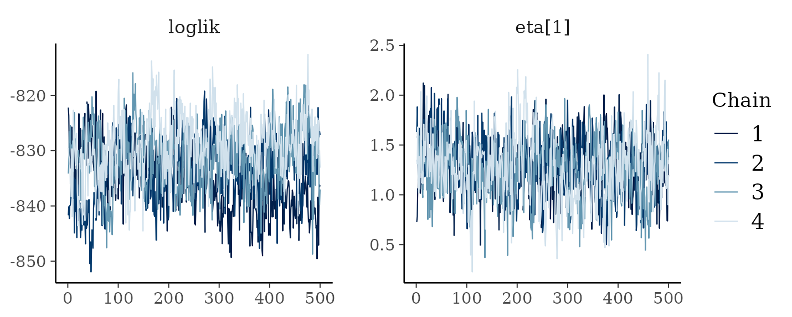
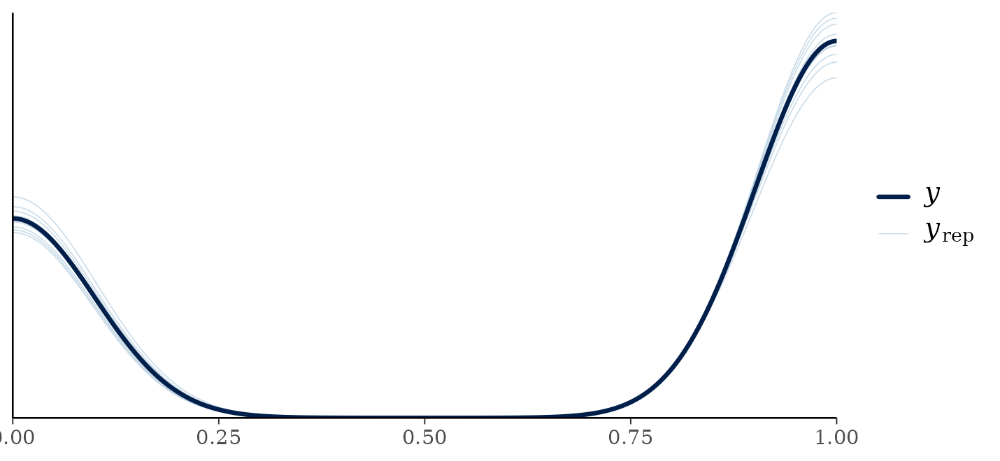
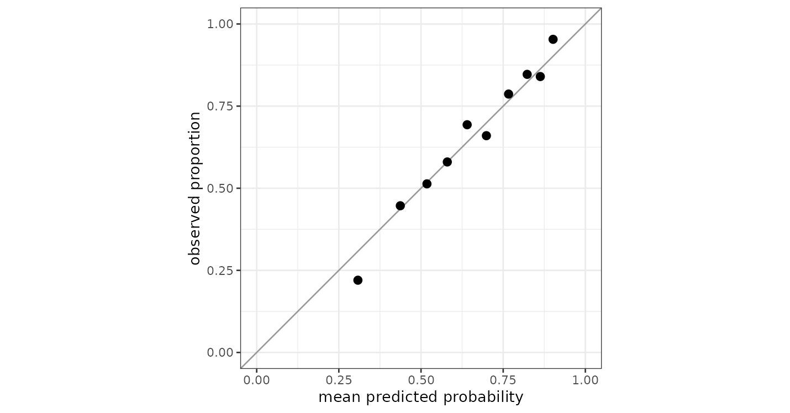

Has it converged, and does it fit?
Noah Greifer
2026-09-02
Source:vignettes/diagnostics.Rmd
diagnostics.RmdIntroduction
Two questions get asked together and are worth separating. Has the sampler converged, meaning has it explored the posterior properly? And does the model fit, meaning does it describe the data?
The first is about the algorithm and the second is about the model. A fit can converge beautifully on a badly chosen family, and a well chosen family can be fitted by a chain that has not run long enough.
Convergence
One call for all of it
diagnose() computes every convergence and mixing
statistic in this section, says which of them fall short, and says what
to do about each. Everything it reports comes from the stored draws, so
it needs no other package.
diagnose(fit)
#> Convergence and mixing
#>
#> quantity rhat rhat_late ess_bulk ess_tail
#> loglik 1.18 1.32 16 76
#> splits.eta 1.06 1.05 62 258
#> eta.eta (worst 5% of observations) 1.09 1.15 34 137
#>
#> What to doThe rest of this section is what it is reporting and why, which is
worth reading once. Skip to vignette("bartisan") if the
summary is enough.
Run more than one chain
chains = 4 above is doing the work. The default is one
chain, which produces estimates but no way to check them:
fit$rhat is NULL for a single chain, because
the statistic compares chains to each other. Running four costs four
times as much, which for most fits is a few seconds.
fit$rhat
#> quantity rhat ess_bulk ess_tail
#> 1 loglik 1.18 16.2 76.4
#> 2 eta.eta (worst over observations) 1.17 16.6 48.7rhat compares the variance between chains to the
variance within them (Vehtari et al. 2021). If the chains
have found the same posterior the two agree and the ratio is near 1.
ess_bulk and ess_tail are effective sample
sizes: how many independent draws the correlated ones are worth, in the
middle of the distribution and in the tails.
The conventional thresholds are rhat below 1.01 and
effective sample sizes above about 400 for a quantity you intend to
report precisely. Those come from the general MCMC literature and are a
reasonable default here, with one exception described below.
diagnose() applies them, and takes both as arguments if you
want to move them.
diagnose() adds two things this table does not have. It
repeats rhat on the second half of the retained draws
alone, which is what tells a warmup that ended too early from chains
that have each settled somewhere different: throwing away the early
draws is exactly what more num_burn would have done, so if
that fixes rhat, warmup was the problem. And it reports the
total number of splitting rules in the forest at each draw, which is the
one quantity here that is about the trees rather than about the fitted
values, and which no general-purpose MCMC diagnostic would think to look
at.
What the rows are
loglik is the log likelihood of the whole dataset at
each draw. It is a useful scalar summary of the fit and mixes
reasonably.
aux.* are the nuisance parameters of the family, and are
usually the best behaved rows in the table. A binomial likelihood has
none, so they do not appear here; a Gaussian fit would show
aux.sigma, and a survival fit its scale or baseline
hazard.
eta.* is the additive predictor, summarized over the
observation that mixes worst. This is the fitted function, so it is the
row that matters when predictions or effects are the output.
One quantity is deliberately not in the table. The leaf prior scale,
in fit$sigma_mu, mixes badly in every BART implementation:
on one dataset its counterparts in dbarts and in
stochtree come out at rhat 1.12 and 1.16 with
effective sample sizes of 22 and 17 out of 3000 draws, and
stochtree draws it exactly from its full conditional, so no
sampler can do better. The BART package avoids the question by
never drawing it. It is a hyperparameter whose disagreement between
chains does not reach the fitted function, which on those same fits has
rhat 1.00 and thousands of effective draws, so reporting it
beside eta only produced an alarming row with nothing to
act on. It is out of this table and only out of this table: the draws
are in fit$sigma_mu and reach as_draws(), so
it can still be diagnosed by anyone who wants to.
The one exception
The eta row is a maximum over every observation, so it
is conservative by construction, and forests mix slowly on their fitted
values. Two chains can visit quite different collections of trees that
imply nearly identical predictions, which inflates a between-chain
statistic without meaning the two chains disagree about anything you
would report.
On harder problems this shows up clearly. The following fits the Friedman function, first with a chain far too short and then at the defaults.
set.seed(3)
fr <- as.data.frame(matrix(runif(400 * 10), 400, 10))
names(fr) <- paste0("x", 1:10)
fr$y <- 10 * sin(pi * fr$x1 * fr$x2) + 20 * (fr$x3 - 0.5)^2 +
10 * fr$x4 + 5 * fr$x5 + rnorm(400)
too_short <- bartisan(y ~ ., fr, family = gaussian(), chains = 4,
control = bartisan_control(num_trees = 20, num_burn = 50,
num_draws = 50))
too_short$rhat
#> quantity rhat ess_bulk ess_tail
#> 1 loglik 1.72 6.85 12.3
#> 2 aux.sigma 1.26 12.33 29.6
#> 3 eta.eta (worst over observations) 2.33 5.62 12.1Everything is bad: rhat above 2 for the log likelihood,
the residual standard deviation and the fitted values, with effective
sample sizes under 10. This chain has not converged and nothing from it
should be used.
long_enough <- bartisan(y ~ ., fr, family = gaussian(), chains = 4)
long_enough$rhat
#> quantity rhat ess_bulk ess_tail
#> 1 loglik 1.14 20.7 87.1
#> 2 aux.sigma 1.03 145.2 822.5
#> 3 eta.eta (worst over observations) 1.30 10.3 16.7Now the log likelihood and the residual standard deviation have
converged, and eta has improved but is still above 1.01.
That residual is the phenomenon described above, and adding draws does
not reliably remove it.
When the eta row is elevated, look at the distribution
behind it rather than the maximum:
per_observation_rhat <- function(fit) {
draws <- fit$eta$eta
per <- nrow(draws) / fit$chains
index <- matrix(seq_len(per * fit$chains), per, fit$chains)
apply(draws, 2, function(column) {
posterior::rhat(matrix(column[index], per, fit$chains))
})
}
round(quantile(per_observation_rhat(fit), c(0.5, 0.9, 0.99, 1)), 3)
#> 50% 90% 99% 100%
#> 1.03 1.07 1.12 1.17The median is a little above 1 and so is most of the distribution, so
the maximum in the table is not one badly behaved observation: the
fitted function as a whole mixes slowly here. That is the phenomenon
described above rather than a broken chain, and the two are told apart
by what happens to the quantities you report. If the log likelihood has
converged, along with any nuisance parameters the family has, and an
avg_comparisons() estimate is stable across chains and
across a longer run, the fit is usable.
If instead the log likelihood were badly elevated too, or the estimate moved when the chain was lengthened, that would be a chain that has not converged, and the answer is more draws or a simpler model.
Looking at the chains
as_draws() hands the fit to posterior and
bayesplot. It carries the scalar parameters and a
representative set of eta columns.
library(posterior)
summarise_draws(as_draws(fit))
#> # A tibble: 12 × 10
#> variable mean median sd mad q5 q95 rhat ess_bulk
#> <chr> <dbl> <dbl> <dbl> <dbl> <dbl> <dbl> <dbl> <dbl>
#> 1 loglik -8.32e+2 -8.32e+2 6.14 6.20 -8.43e+2 -8.23e+2 1.18 16.3
#> 2 sigma_mu.eta 2.47e-1 2.39e-1 0.0551 0.0577 1.69e-1 3.48e-1 1.31 10.4
#> 3 eta[380] -1.50e+0 -1.49e+0 0.340 0.343 -2.08e+0 -9.73e-1 1.10 29.7
#> 4 eta[324] -4.31e-1 -4.26e-1 0.281 0.278 -9.06e-1 2.21e-2 1.03 129.
#> 5 eta[917] -1.20e-2 -5.33e-3 0.442 0.436 -7.28e-1 7.25e-1 1.09 32.1
#> 6 eta[48] 2.88e-1 2.81e-1 0.346 0.340 -2.68e-1 8.95e-1 1.02 210.
#> 7 eta[1034] 5.81e-1 5.89e-1 0.311 0.307 5.93e-2 1.06e+0 1.01 229.
#> 8 eta[639] 8.85e-1 8.83e-1 0.344 0.331 3.34e-1 1.44e+0 1.04 70.5
#> 9 eta[1372] 1.28e+0 1.25e+0 0.409 0.420 6.30e-1 1.98e+0 1.07 44.7
#> 10 eta[1222] 1.66e+0 1.64e+0 0.376 0.364 1.06e+0 2.29e+0 1.01 347.
#> 11 eta[362] 2.01e+0 2.01e+0 0.416 0.407 1.34e+0 2.68e+0 1.02 312.
#> 12 eta[1135] 3.13e+0 3.09e+0 0.514 0.500 2.35e+0 4.05e+0 1.12 25.3
#> # ℹ 1 more variable: ess_tail <dbl>
library(bayesplot)
mcmc_trace(as_draws(fit, eta = 1), pars = c("loglik", "eta[1]"))
What you want to see is four chains overlapping, wandering around the
same level, with no drift and no long excursions. eta = 1
selects the first observation; eta = TRUE gives a spread of
ten and eta = FALSE gives none.
What to do when it has not converged
In order of what usually helps:
- Increase
num_burnandnum_draws. This is the first thing to try and it fixes most cases. - Reduce
num_trees. A smaller forest has fewer ways to represent the same function and mixes faster. - Check the family. A likelihood that fits the data badly can produce a posterior that is hard to explore.
Fit
Convergence says the sampler did its job. It says nothing about whether the model is right.
Posterior predictive checks
Simulate outcomes from the fitted model and compare their distribution to the observed one.
pp_check(fit)
For a continuous outcome this is the workhorse check, and systematic
differences are what to look for: replicates that are too narrow, that
miss a second mode, or that put mass where the outcome cannot go.
Simulating negative values for an outcome that cannot be negative says
the family is wrong, and vignette("families") covers the
alternatives.
For a binary outcome it is a weak check, which is worth knowing before reading too much into it. There are only two values the replicates can take, so they will match the observed proportion unless the model has gone badly wrong. Passing this tells you almost nothing.
Calibration
The useful question for a binary outcome is whether the predicted probabilities mean what they say. Group the patients by their fitted probability and compare the average prediction in each group with the proportion who actually died.
library(ggplot2)
p <- fitted(fit)
bins <- cut(p, quantile(p, seq(0, 1, 0.1)), include.lowest = TRUE)
calibration <- data.frame(
predicted = tapply(p, bins, mean),
observed = tapply(rhc$death, bins, mean)
)
ggplot(calibration, aes(predicted, observed)) +
geom_abline(slope = 1, intercept = 0, colour = "grey60") +
geom_point(size = 2) +
coord_equal(xlim = c(0, 1), ylim = c(0, 1)) +
labs(x = "mean predicted probability", y = "observed proportion") +
theme_bw(base_size = 9)
Points on the diagonal mean the probabilities are calibrated: among patients the model gave a 30% chance of dying, about 30% died. These sit close to it across the whole range.
Points systematically above the line at the left and below it at the right would mean the predictions are too extreme, which is the usual failure of an overfitted model. The opposite pattern means they are too timid, which is what heavy shrinkage produces.
This is an in-sample check and so is optimistic. For an honest version, fit on part of the data and calibrate on the rest.
Residuals
For a continuous outcome, plot residuals against fitted values and
read it the way you would for a linear model, with one difference. A
forest shrinks its predictions toward the overall mean, so a mild
negative trend is expected even when the model is correct: the highest
fitted values are pulled down and the lowest pulled up. A strong slope
is not expected, and a fan shape means the spread of the outcome depends
on the predictors, which location_scale() models
directly.
For a binary outcome the residuals take two values for any given fitted probability and the plot is not informative. Use the calibration check instead.
How much is the model explaining
performance::r2(fit)
#> # Bayesian R2 with Compatibility Interval
#>
#> Conditional R2: 0.172 (95% CI [0.138, 0.204])This is the Bayesian \(R^2\) of Gelman et al. (2019), computed from the posterior rather than from a single fit, so it comes with an interval and cannot exceed 1. For a binary outcome it is bounded well below 1 by the outcome’s own randomness, so read it as a relative measure rather than against any absolute standard.
A checklist
Before reporting anything from a fit:
- Fit with
chains = 4. - Run
diagnose(fit)and read what it says to change. It covers steps 2 and 3 of the older advice: the thresholds, which rows are exempt, and whether a short warmup or genuinely disagreeing chains is the problem. - Run
pp_check()and look for systematic differences. - If the outcome is bounded, check that the replicates respect the bound.
Where to go next
vignette("comparison") covers choosing between models
once each of them fits. vignette("families") covers what to
do when the posterior predictive check says the family is wrong.